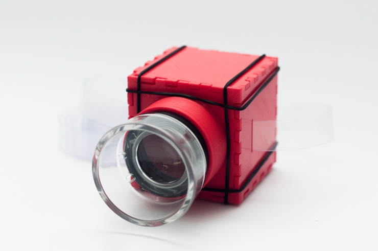

LIGHT MESSAGES

«Light Messages»
The messages of light claim the image of a collector of vanished glances. This work is born from a permanent search on the multiple ways of perceiving the moving image. Projecting allows us to raise again the contemporary gaze that has a very closed amplitude given by its focus located on small screens. This work seeks the temporality of the act of sending a written letter. The acetate strips, the light and the lens allow us to recreate an imaginary world, to inhabit the magic of writing a message to someone known or unknown, imagining the space-time in which the other receives and reads it. Imagining this other from the recovery of gestures vanished by technology, places us in an act of resistance that frees us from an enclosed gaze.
This work was part of the 16 Salón Regional de Artistas de Colombia: https://16sracentro.com/2019/01/18/enrico-mandirola-mensajes-de-luz/